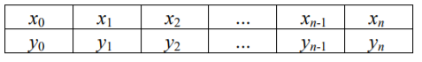
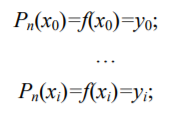
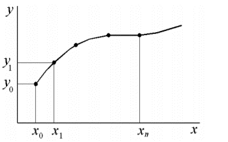
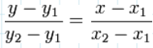

Інтерполяція – засіб знаходження проміжних значень величини за наявним дискретним набором відомих значень. Тобто, знаходження наближеної функції за точками, які належать оригінальній функції.
Нехай в ході експерименту при зміні вхідної величини х (x0, x1, x2, ..., xn) отримані значення функції y=f(x) (y0, y1, y2.....yn). Інтерполяцію функцій застосовують у випадку, коли потрібно знайти значення функції y(хi) при значенні аргументу xi, який належить інтервалу [x0, …, xn], але не співпадає за значенням з жодним значенням вказаного масиву значень.
Дана задача, а саме інтерполяція функцій, часто зустрічається при обмеженості можливостей при проведенні експерименту. Зокрема через дорогу ціну і трудомісткість проведення експерименту розмір вибірки (x0, x1, x2,..., xn) може бути достатньо малий. Тому замість цього будують іншу функцію, яка легко вираховується і має ту ж таблицю значень (співпадає з нею в точках x0, x1, x2,..., xn), що й f(x), тобто:
де i = 0, 1, 2, … , n.
Знаходження наближеної функції називається інтерполяцією, а точки x0, x1, x2, …, xn – вузлами інтерполяції. Інтерполяційну функцію шукають у вигляді многочлена n степені. Для кожного набору точок є тільфки один інтерполяційний многочлен, степені не більше n. Однозначно визначений многочлен може бути представлений в різних видах. Графічно задача інтерполяції є в тому, щоб побудувати таку інтерполяційну функцію, яка би проходила через всі вузли інтерполяції.
Найпростіший приклад інтерполяції - це знаходження лінійної функції за двома точками, які належать цій лінійній функції:
де x1, y1, x2, y2 – координати двох точок, даних нам за умовою.